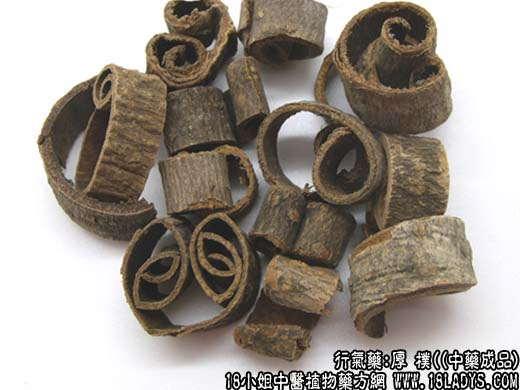
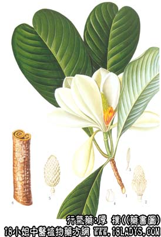

原文连接:https://www.daquan.com/post/2145.html



厚朴为常用中药。始载《神农本草经》列为中品。
别名：紫朴、紫油朴、川朴。
来源：为木兰科植物落叶乔木厚朴或凹叶厚朴的干燥枝皮、干皮、根皮。多为栽培。
产地：川朴主产于四川、湖北、湖南以及广东、广西、江西、云南、贵州、安徽等省。温朴主产于浙江（在温州集散）、福建等省。
性状鉴别：厚朴由于取材部位和加工形状不同，商品分毛根朴、根朴、靴朴、筒朴、枝朴等品种；又根据皮层的薄厚、柴性、肉性以及含油情况等几方面的因素，划分成不同等级，区分品质优务。
1、毛根朴。是从厚朴树较细枝根上剥下的皮层，呈不规则的长条单卷筒状、双卷筒状或破裂长片状。长短不一，约5~50厘米，直径约0.5~2厘米，厚约1~3毫米，弯曲如肠，故又名“鸡肠朴”。外表皮棕色或灰褐色，有较细密的纵皱纹。内表面棕色或紫棕色，略平滑。质韧，断面棕红色，纤维性。气辛香，味微苦辣。嚼之残渣较多。
2、根朴。是从厚朴树主根上剥下的皮层。形太不一，有卷筒状、片块状、羊耳状等形式，皮层略厚，约3~5毫米。外表皮灰棕色或棕褐色，有不规则的纵皱纹。内表面紫棕色，显平滑油润、质稍坚韧。断面紫棕色，颗粒状，少纤维，显油润。气辛香，味辛微苦。嚼之残渣较少。
3、靴朴。是从厚朴树靠近根部主干上剥下的皮层，呈单卷筒状，上细下粗，状如喇叭或长筒靴形故名“靴朴”，又名脑朴或兜朴。长70~80厘米，上端直径约10厘米，下端约15~20厘米，厚约3~8毫米。外表皮粗糙，灰棕色或灰褐色，有的刮去表皮则略平滑，露肉部分棕色，带薄皮部分灰白色。内表面紫棕色，略平滑。质坚韧，断面棕色，颗粒状，显油润。气辛香，味辛苦。嚼之残渣较少。
4、筒朴。是从厚朴树主干较粗大的枝干上剥下的皮层。呈单卷筒或双卷筒状，多截成40厘米或80厘米的节段，单卷直径约4～6厘米，皮厚约3～6毫米。外表皮粗糙，灰褐色或灰棕色，常带有明显的节疤痕及灰白或灰绿色花斑。内表面紫棕色。质坚韧，断面颗粒状或显纤维性，棕红色。气香较淡，味苦辣。嚼之残渣稍多。
5、枝朴。是从厚朴树枝上剥下的皮层，形状与筒朴略同，唯皮层较薄，厚约1～2毫米，外表皮灰褐色，内表皮黄棕色。断面纤维性较大，香辣味较小，嚼之多渣。
以肉厚油润，断面紫棕色，颗粒状，少纤维，嚼之少渣，香辣味浓烈者为佳。
主要成分：含厚朴酚、异厚朴酚、巨箭毒硷；挥发油中含有桢楠醇。
功效与作用：1、抗菌。体外试验对痢疾杆菌、大肠杆菌、伤寒杆菌有较强的抗菌作用。对金黄色葡萄球菌的抗菌作用比黄连、黄芩更强。
2、解痉。厚朴煎液能使实验动物离体肠管的紧张度下降，对横纹肌的强直收缩有轻度缓解作用，因其对横纹肌的运动神经末稍有一定麻痹作用，与箭毒作用相类似。
3、健胃。刺激消化道粘膜引起反射性兴奋。
此外，前人还观察到厚朴具有镇痛、镇静和平喘的作用。
炮制：姜制后切丝。
性味：苦、辛，温。
归经：入脾、胃、肺、大肠经。
功能：温中下气，燥湿化痰，平喘。
主治：脘腹胀闷，腹痛，反胃呕吐，咳喘等症。
临床应用：为除胀和止泻的重要药物。
1、用于治疗腹胀。主要用于实胀（腹胀而有不便黄短、大便干结、脉滑数有力），其中对谷胀（饮食过度而致消化不良）、气胀（因胃肠功能失调，而致肠内物质腐败发酵，气体产量过多而在肠内积聚，常见于肠炎、肝炎、胃肠神经官能症）尤为适宜。如属谷胀，可配山楂、麦芽、神曲等消导药；如属气账，程度轻者可单用存朴2.4~3g（研末）开水送服即能减轻，一般多配半夏、茯苓，如半夏存朴汤；肝炎所致的气胀，常在逍遥散基础上加厚朴、大腹皮以减轻腹胀。
至于虚胀和寒胀，其治疗主要不靠厚朴，并应慎用。治虚胀用党参比用厚朴好；治寒胀也只在温补药中酌加厚朴协助。
2、用于治疗泄泻下痢（急性肠炎）。单用厚朴一味，即能止泻。可用厚朴9g（研末），开水送服。每日三次。
3、用于治疗胃实（腹脘胀满、宿食不消、吞酸嗳腐，或有呕吐，相当于消化不良），取其有健胃作用，能消除胃脘实痞，前人称此作用为“平胃”。一般配苍术、茯苓等，方如平胃散；如偏于热者，则配黄连、栀子，方如连朴饮；偏于寒者则配豆蔻，干姜，方如厚朴温中汤。
4、用于平喘，其原理尚待进一步研究（可能为对支气管平滑肌有松弛作用）。常辅助麻黄、杏仁，治疗痰饮喘咳，有痰多、胸满、咳喘、苔白腻，多见于肺气肿合并感染，方如厚朴麻黄汤，此方也可治痉挛性支气管炎。
用量：3~9g健胃宜少量，行气及止泻则用量可稍大。
处方举例：1、半夏厚朴汤（《金匮要略》）：制半夏6g，厚朴6g，茯苓9g，苏叶6g，生姜6g，水煎服。
2、平胃散：（见苍术项下）。
3、连朴饮（《霍乱论》）：川连3g，川朴4.5g，石菖蒲3g，制半夏3g，山栀子9g，淡豆豉9g，芦根6g，水煎服 。
4、厚朴温中汤（《内外伤辩惑论》）：厚朴6g，草豆蔻2.4g，陈皮6g，木香3g（后下）、茯苓9g，干姜6g，甘草3g，水煎服。
5、厚朴麻黄汤加减：厚朴6g，麻黄3g，杏仁9g，制半夏3g，五味子1.5g，淡干姜1.5g，细辛1.5g，茯苓12g，甘草3g，水煎服。
注：在云南和广西部分地区以一种外形和厚朴相似的树皮作厚朴使用。但其内色呈黄棕色，枯燥而不显油润，柴性较大。气异臭（臭肥皂味），味微苦，而不辣。据知是同科植物木莲或辛夷等树木的皮层，因气味与厚朴不同，不应作厚朴使用。注意区分。